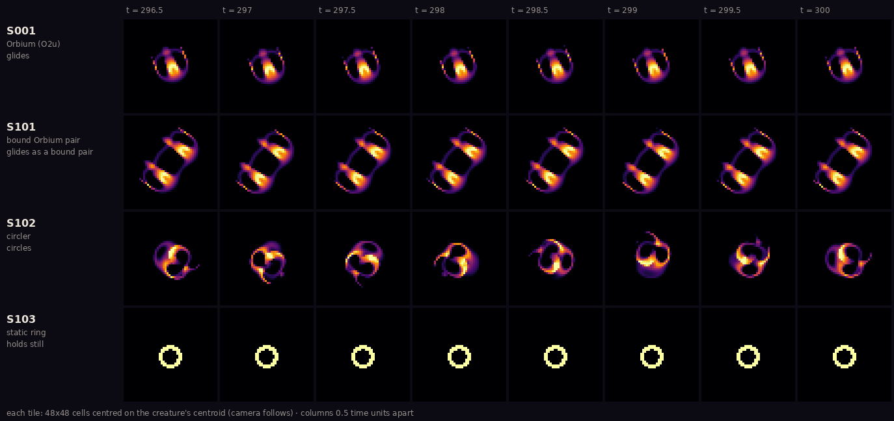

Turn Orbium's two dials slightly, from μ = 0.15, σ = 0.015 to μ = 0.155,
σ = 0.020, and the same physics supports three quite different animals. Which one you get
depends on how the world started, not on the rule.
Contact sheet · eight frames, half a time unit apart

Shape over time, travel hidden. The camera follows each creature,
so only changes of shape remain. Orbium (S001) and the bound pair (S101) hardly change. The
circler (S102) is never the same twice. The ring (S103) never changes at all. Eight frames do
not establish a period. Lane 8, exhibit G003 ·
provenance.
At μ = 0.155, σ = 0.020, an Orbium glider, the circler and the static ring each
persist for at least 500 time units, and the wounds from Room 3 never turned a glider into a
circler or back, in 316 tries.
One rule supports three phenotypes chosen by history C038reproduced
(REPRODUCED (clean-process reruns); not yet reproduced by a second lane). No glider–circler switching was seen C040observed.
S102, the circler. As fast as Orbium, but it runs round a circle
whose radius is about a quarter of a kernel radius, about one lap every 3.8 time units, and goes nowhere.
Wounds kill it more easily than the other two. It does not, as first reported, die when drawn
at finer resolution. Copies enlarged to R = 26 and R = 39 by block, nearest-neighbour or cubic
resizing stayed healthy circlers for the full 1000 time units, and only the copy enlarged by
bilinear smoothing died. The replication lane and the field explorer got the same result for
all eight copies in two independent engines C047indep. checked, in an exploratory check of one
seed placement under this one rule. So what failed was the resize method, not the creature at higher
resolution, and the original claim is C039refuted.S103, the still ring. 64 completely full cells around an empty
core. After 10 000 steps it is bit-for-bit the same as when it started, and after a 20%
dimming it returns exactly to itself C042reproduced. It exists because Lenia clips every cell
to [0, 1]: a version without the clip would not have it. In 2 of 38 runs, a flank wound
turned the circler into this ring.
The pair that sheds a partner
S101, the bound Orbium pair. Two Orbium bodies side by side,
joined by one thin shared shell, under Orbium's own rule. Its mass is 2.004 times Orbium's
and it travels 1.4% slower. Lane 8, exhibit G002.
Cut into a single Orbium's flank at the protocol's strength 0.10 or more
and it dies, in all 36 runs. Make the same cut in the pair, at any strength from 0.10 to
0.50, and all 18 runs end as one ordinary, healthy Orbium.
The pair survives the wound by shedding to a single Orbium
C041observed.
The obvious objection The partners travel side by side,
and the cut runs along the direction of travel, so it mostly lands on one partner. The result
may only mean that the uninjured partner is not dragged down by the dying one, not that the
pair heals or cooperates. Lane 6 raised this itself. The Night 1 pair-dynamics expedition is
testing it now, against lone-Orbium baselines.
Not new species
It would be tempting to name these. They are not new: each one is a species already in
Bert Chan's catalogue, carried to a nearby rule. Run the catalogue's own Synorbium, Gyrorbium
and Circium patterns under these rules and they settle into the same bodies, to three or four
decimal places C043observed. Around Orbium itself, the field explorer found no other forms at
all, apart from the circler and the pair C044observed. That is why these specimens have stable
IDs but no nicknames.
Figure C · Lane 9, Scientific Illustrator · one lane's data